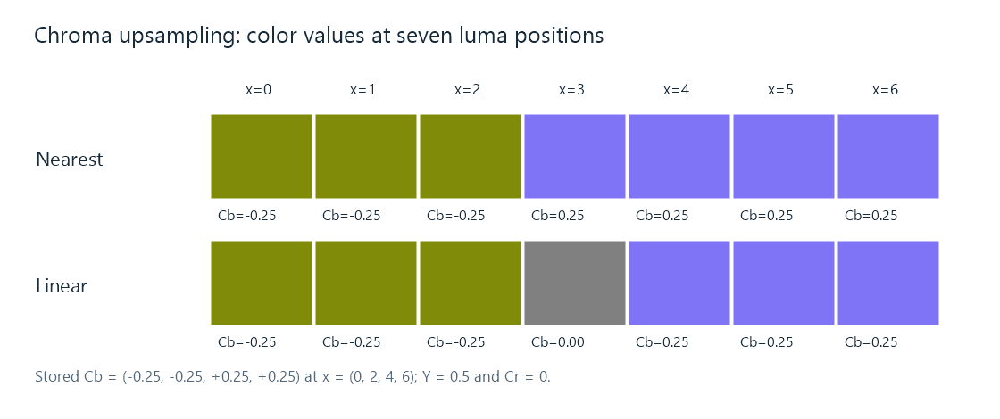

Chroma Upsampling
Chroma upsampling reconstructs color-difference values at the positions required by a fuller picture or output grid.
A 1920 × 1080 4:2:0 frame has full-size luma but only 960 × 540 samples of each color-difference component. To display a color at each final picture position, the renderer needs to reconstruct the chroma values required there.
Chroma upsampling performs that reconstruction. It happens even when the displayed picture dimensions match the source luma dimensions: the chroma grids themselves still need a fuller representation. A conversion preparing RGB or 4:4:4 working values can make the same operation explicit.
Four stored values, seven required positions
Take a horizontal Cb signal stored at luma coordinates 0, 2, 4, 6, with values −0.25, −0.25, +0.25, +0.25. Assume it is constant vertically, with luma Y′ = 0.5 and Cr = 0, so the horizontal chroma decision can be isolated.

The color previews use the BT.709 YCbCr matrix and ordinary RGB display in this PNG. The example illustrates component reconstruction, not a calibrated measurement of display light.
At the stored positions, both illustrated methods retain the original values. Between them, their choices differ:
| Luma position | Nearest sample choice | Linear reconstruction |
|---|---|---|
| x = 1, between two −0.25 samples | −0.25 | −0.25 |
| x = 3, halfway across the color transition | +0.25 with the stated upper-index tie rule | 0 |
| x = 5, between two +0.25 samples | +0.25 | +0.25 |
Linear reconstruction at x = 3 gives 0.5 × (−0.25) + 0.5 × (+0.25) = 0. This produces a neutral chroma value at the transition, while nearest selection changes directly from one endpoint to the other.
Using the example's matrix, the blue coordinate is B′ = Y′ + 1.8556 Cb. It is approximately 0.0361 for Cb = −0.25, 0.5 at the interpolated midpoint, and 0.9639 for Cb = +0.25. The green coordinate changes too, because it must preserve the specified luma relation. Reconstruction supplies a complete RGB mixture at that intermediate position.
Correct coordinates come before filter choice
The example placed its chroma at specified luma coordinates. A centered grid would put its samples half a luma spacing farther right. The same array values would then be interpolated with a different fraction at each luma position.
Chroma sample location describes that phase. A stronger or wider filter cannot repair a coordinate interpretation that systematically places the color transition in the wrong location.
In a two-dimensional 4:2:0 picture, both horizontal and vertical reconstruction matter. Interlaced sources also require the correct field geometry; combining chroma from different motion instants as if it were one progressive grid can change moving edges. Those geometry decisions establish which samples a reconstruction stage should combine.
The working grid and the displayed grid
A renderer can first build full-resolution chroma aligned with luma, then convert to RGB and resize the resulting picture. Another implementation can map the final output coordinates directly into each source plane, combining chroma upsampling and picture scaling in one processing stage.
Both approaches need the same essential information: source plane dimensions, sample locations, output geometry, and suitable reconstruction weights. A separate luma and chroma filter choice is possible because each plane has different source spacing.
In an Emby playback comparison, that helps distinguish a general soft picture from color-specific edge behavior. Fine white text against black tests luma structure strongly. Fine color transitions at similar luma make the chroma reconstruction more visible. The same material can look different if the app and a server-converted route reconstruct its planes differently.
A denser representation for subsequent processing
The reconstructed grid gives an overlay or color operation component values at the positions it needs. New subtitle artwork can then contribute sharp color structure at those positions. If the finished picture is later encoded as 4:2:0, the combined chroma enters a new reduction stage.
That sequence explains why the input chroma density, the working density, and the encoded output density can all differ. Upsampling estimates the values between surviving source samples; compositing adds new information; the final encoder determines how densely their combined color structure is represented.
See Also
- Chroma Subsampling
- Chroma Sample Location
- YCbCr Video
- How Video Scaling Works
- Bilinear Video Scaling